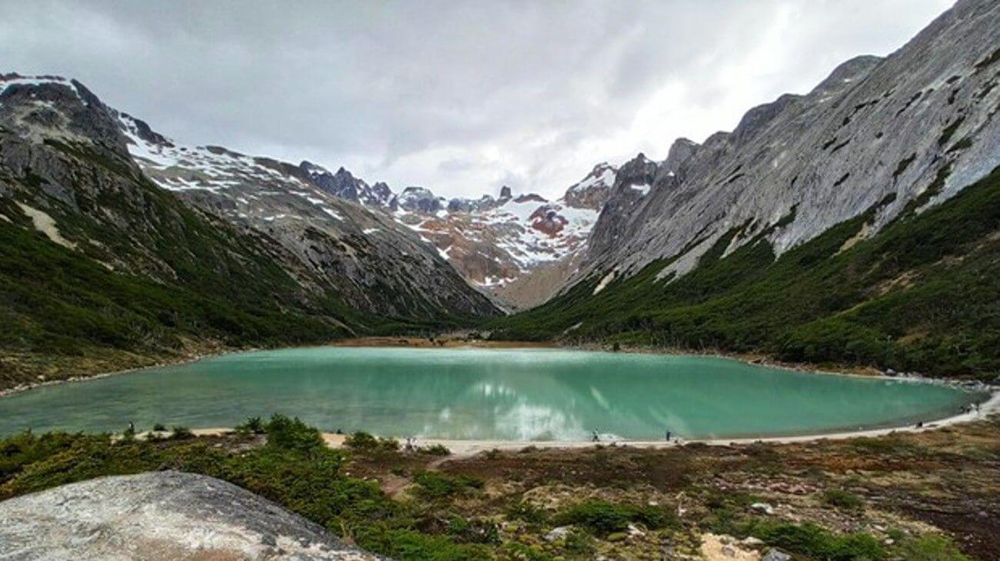

Ushuaia ofrece una infinidad de posibilidades para explorar y disfrutar en verano. Se trata de la ciudad más austral del planeta y por su ubicación cercana al Polo Sur, tiene aproximadamente dieciocho horas de luz en verano. Su temperatura media en esta época es de 7,5°C. Situada sobre las orillas del extenso canal Beagle, esta bella ciudad ofrece paisajes magníficos, entre los que predominan los bosques, las montañas, el mar y los glaciares. Se encuentra rodeada al oeste por el monte Martial y al este por los montes Olivia y Cinco Hermanos. Trekking, Canotaje, Expediciones en Land Rover Defenders 4X4, Salidas de Pesca y visitas a Estancias son sólo algunas de las tantas experiencias que ofrecemos desde Tierra Turismo en esta temporada.

Un faro en un cabo solitario, un misterioso barco encallado hace 40 años atrás y una distinguida estancia antigua son algunos de los íconos que te revelarán las historias desconocidas de Tierra del Fuego.
Ir a excursion
Llegá a este magnífico lugar, atravesando un valle, un turbal y ascendiendo por la ladera rocosa de una montaña. Las vistas del glaciar y la Laguna de los Témpanos son imperdibles.
Ir a excursion
Montañas nevadas, turberas con misterioso brillo rojizo, valles de un verdor increíble con ríos caudalosos y lagos de original belleza… si te gusta caminar, explorar y contemplar nuestra Madre Naturaleza en un espacio tranquilo
Ir a exrcusion
Una caminata hacia un lugar único y maravilloso de Tierra del Fuego, para observar la magia de los colores de la naturaleza: desde el verde del bosque y el rojo de la turba, hasta llegar al turquesa de la Laguna.
Ir a excursion